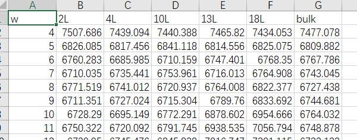
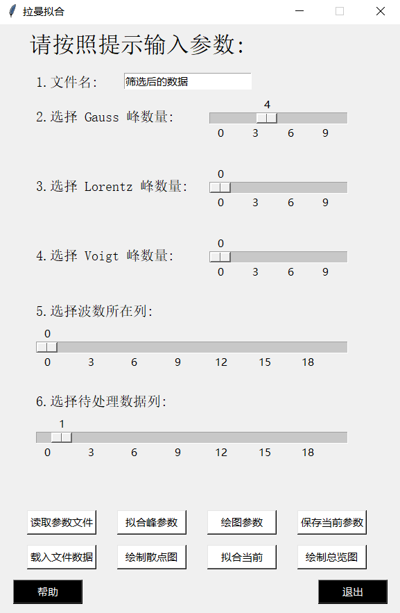

基于python的拉曼光谱多峰拟合程序开发笔记1
摘要
因为感觉origin在拟合拉曼光谱方面不太好用，而且更喜欢python的绘图风格。
于是自己写的一个python程序，本文是随着程序开发一同写的，记录一下编程框架和难点，不代表最终版本。
注意：本文是类似于草稿和日记的笔记，不用作解释代码和介绍程序功能。使用说明会另开文章。
编辑器使用的是 python 3.9.0 Shell 本来是用的 vscode 用的 python3.9
后来为了玩原神自动钓鱼又装了 anaconda，它自动装了 python3.10 然后又把 vscode重新装了。刚好那是我准备学 c++于是在vscode配了c++的环境，python的懒得弄了，直接在shell上敲。
jupyter我只在编写小段程序，或者玩机器学习的适合用。
使用库
numpy pandas matplotlib.pyplot scipy.optimize中的curve_fit scipy.special中的wofz tkinter
自建 fitcures plotpic setting subfunction ## 1.输入格式
utf-8格式保存的csv文件。部分展示如下

2.代码架构
2.1 界面

界面使用的是tkinter库，用类方法调用，初始化函数如下：
1 | # 调用时初始化 |
其中self.main_window()是主界面布局，内容如上图。
拟定按钮上四个为参数相关，下四个为画图相关。截止2022年3月30号，“绘图参数”按钮功能和“绘制总览图”按钮功能还未开发，其余的开发完毕。
点击上四个按钮都会出现一个弹窗，可以选择文件或者修改参数，详见使用说明。
点击下四个按钮会在命令窗口出现交互或者出一张图。
2.2 绘图和拟合
绘制散点图没啥好说的
使用 1
plt.scatter(x, y, alpha=0.8,s=13,color=scatter_color)
拟合需要先有函数,下面给出多峰拟合函数 1
2
3
4
5
6
7
8
9
10
11
12
13
14
15
16
17
18
19
20
21
22
23
24
25
26
27
28
29
30def Lorentz(x,y0,A,xc,w):
y = y0 + w*A*(w/(4*(x-xc)**2 + w**2))
return y
def Gauss(x,y0,A,xc,w):
y = y0 + A * np.exp(-2*((x-xc)/w)**2)
return y
def Voigt(x, y0, amp, pos, fwhm, shape = 1):
tmp = 1/wofz(np.zeros((len(x))) + 1j*np.sqrt(np.log(2.0))*shape).real
return y0+tmp*amp*wofz(2*np.sqrt(np.log(2.0))*(x-pos)/fwhm+1j*np.sqrt(np.log(2.0))*shape).real
# 多峰拟合函数
# g,l,v分别为高斯、洛伦兹和Voigt峰的数量
# temp和p是参数，每个峰有4个参数
def fit_function(x,g,l,v,temp,*p):
y = 0
if isinstance(temp,str):
p = list(p[0])
else:
p = list(p)
p.insert(0,temp)
for i in range(g):
y += Gauss(x,p[i*4+0],p[i*4+1],p[i*4+2],p[i*4+3])
for i in range(g,g+l):
y += Lorentz(x,p[i*4+0],p[i*4+1],p[i*4+2],p[i*4+3])
for i in range(g+l,g+l+v):
y += Voigt(x,p[i*4+0],p[i*4+1],p[i*4+2],p[i*4+3])
return y
拟合使用curve_fit
因为是不定长度参数，所以我先使用lambda函数包装了一下
1 | popt,pcov = curve_fit(lambda x,temp,*p: fit_function(x,g,l,v,temp,*p),x,y,\ |
2.3 文件存储和读取
保存使用的是np.savez
调用窗口使用 1
2
3file_path = tk.filedialog.askopenfilename(title=u'选择要读取的文件')
save_name = tk.filedialog.asksaveasfilename(title=u'保存参数')
结束语
拉曼拟合1.0开发先到这里，目前先去完善使用手册，等当前部分调试bug无误后再结合使用意见更新该程序。